0. 第六章到底在证明什么
| 实验 | 核心问题 | 主要证据 | 一句话结论 | 不回答的问题 |
|---|---|---|---|---|
| exp00 | 实现路径是否一致 | FFT vs sparse direct 表 | 只是 implementation validation | 不回答连续 PDE 精度 |
| 实验一 | Dirichlet 格式阶数是否达标 | 收敛图、非齐次边界可视化 | 五点二阶，FFT9 四阶 | 不证明 FFT9 支持 Neumann/mixed |
| 实验二 | Neumann/mixed 边界是否闭合 | 误差、flux、weighted mean | 边界残差和零模态诊断闭合 | 不做性能比较 |
| 实验三 | FFT 与 GMRES 如何对比 | error-time、time scaling | FFT9 在光滑 Dirichlet 下更优 | 不是严格 kernel benchmark |
| 实验四 | Helmholtz 为什么影响 GMRES | risk map、condition check、residual history | true Helmholtz 小分母导致谱风险 | 不外推到所有系统 |
| 实验五 | 近共振具体放大哪个模态 | 模态投影、dominant projection、GMRES history | 目标模态按 1/|delta| 放大 | 不是连续谱极限结论 |
1. 统一方程与频域分母小抄
| 类型 | sigma | 分母 | 直觉 |
|---|---|---|---|
| Poisson | 0 | d = λ | 标准椭圆问题 |
| modified Helmholtz | +κ² | d = λ + κ² | 分母全正且更远离 0 |
| true Helmholtz | -κ² | d = λ - κ² | 可能穿过离散谱，产生小分母 |
2. 两个基本读图规则
收敛阶怎么看
若误差满足 ||uh-u||≈Chp，则 log-log 图中的斜率就是收敛阶 p。网格加密一倍时，二阶误差约缩小 4 倍，四阶误差约缩小 16 倍。
因此看收敛图时，不要只盯某个误差数字，而要看曲线是否贴近 O(h²) 或 O(h⁴) 参考线。
error-time 图怎么看
横轴是计算时间，纵轴是误差，越靠左下越好。FFT9 的优势来自四阶离散误差，而 GMRES30 曲线同时受到离散误差和代数残差影响。
本论文的 timing scope 不是严格 kernel-to-kernel benchmark：direct solvers 计时包含 solver call 内部 RHS/transform setup，GMRES30 计时排除了 matrix/RHS setup。
3. 实现校验：exp00 为什么不算核心实验
exp00 比较 FFT solver 与 sparse direct solver 的结果。如果误差在 10-14 量级，说明两条求解路径对齐到同一个离散线性系统。
| 边界 | sigma | 类型 | 方法 | 与 sparse direct 的误差 |
|---|---|---|---|---|
| dirichlet | 0.0 | Poisson | FA | 1.243e-14 |
| dirichlet | 0.0 | Poisson | FA | 1.910e-14 |
| dirichlet | 0.0 | Poisson | CR | 8.882e-15 |
| dirichlet | 0.0 | Poisson | CR | 1.354e-14 |
| dirichlet | 0.0 | Poisson | FACR | 8.216e-15 |
| dirichlet | 0.0 | Poisson | FACR | 6.994e-15 |
| dirichlet | 10.0 | modified_H | FA | 7.327e-15 |
| dirichlet | 10.0 | modified_H | FA | 1.188e-14 |
| dirichlet | 10.0 | modified_H | CR | 3.886e-15 |
| dirichlet | 10.0 | modified_H | CR | 1.066e-14 |
4. 实验一：Dirichlet 离散格式收敛性验证
为什么做
本实验回答两个基础问题：五点格式是否达到二阶，FFT9 是否达到四阶。主测试采用 polynomial manufactured solution，避免单一 Fourier 模态过于“顺着 FFT 方法”。
方法定位
| 方法 | 离散模板 | 理论阶数 | 边界范围 |
|---|---|---|---|
| FA / CR / FACR-like | 五点格式 | O(h²) | D/N/mixed 五点求解器 |
| FFT9 | 九点紧致格式 | O(h⁴) | 本文只实现并验证 Dirichlet |
| 方法 | n | L∞ 误差 | 观测阶 |
|---|---|---|---|
| FA | 33 | 8.915e-06 | 2 |
| FA | 65 | 2.229e-06 | 2 |
| FA | 129 | 5.572e-07 | 2 |
| FFT9 | 33 | 8.808e-09 | 4 |
| FFT9 | 65 | 5.505e-10 | 4 |
| FFT9 | 129 | 3.441e-11 | 4 |
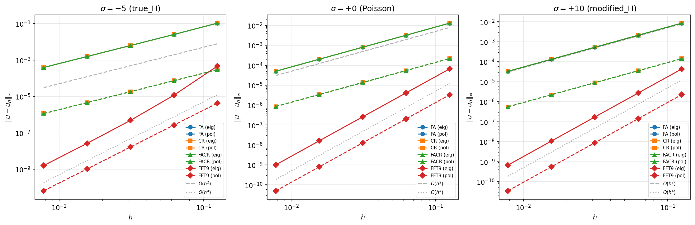
- 看什么：看 log-log 曲线斜率，而不是单个误差值。
- 关键现象：FA/CR/FACR-like 贴近二阶参考线，FFT9 贴近四阶参考线。
- 理论对应：五点截断误差为 O(h²)，FFT9 紧致修正达到 O(h⁴)。
- 不要误读：FFT9 四阶结论只限本文实现的 Dirichlet 情形。
非齐次 Dirichlet 子情形
非齐次 Dirichlet 主要检查边界值 gD 移到右端项时符号和模板处理是否正确。它保留在正文中作为 boundary visual sanity check，不再单独占用核心实验编号。
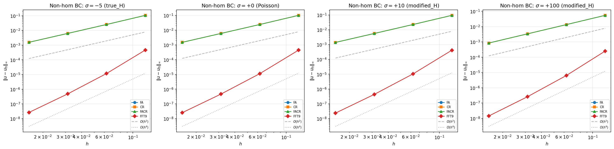
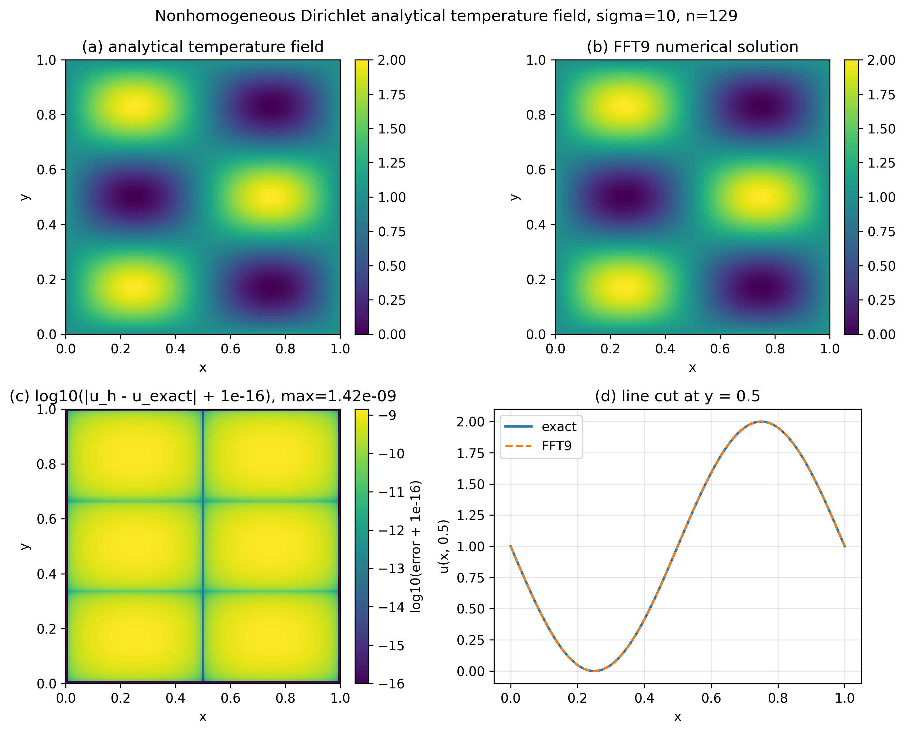
- 看什么：解析场、数值场和误差分布是否一致，边界附近是否异常。
- 关键现象：非齐次边界贡献处理后，五点仍二阶，FFT9 仍四阶。
- 理论对应：边界已知值从离散模板移到右端项，符号必须正确。
- 不要误读：这两张图是边界 sanity check，收敛阶主证据仍是前面的收敛图和表。
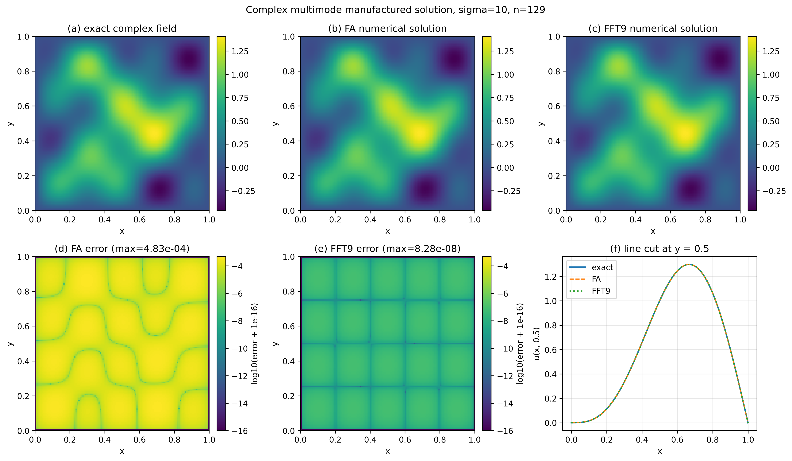
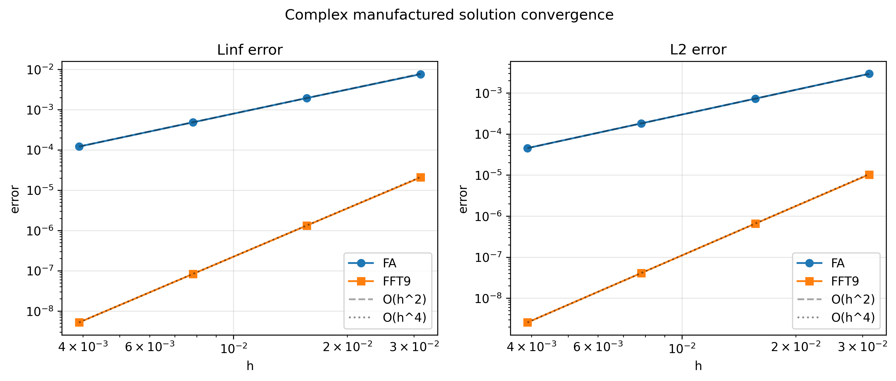
- 看什么：复杂空间结构下 exact、FA、FFT9 和误差分布是否合理。
- 关键现象：旧版 max error≈1 的异常已排除，FA 二阶、FFT9 四阶。
- 理论对应：多个正弦模态逐项构造 RHS，避免统一系数错误。
- 不要误读：这是可视化补充，不是新增核心实验。
5. 实验二：Neumann 与 mixed 边界处理
为什么独立成实验
Neumann 给定的是法向导数，不是函数值。ghost-point 会改变边界行结构，Pure Neumann Poisson 还存在常数零模态，因此本实验重点不是重复五点二阶，而是验证边界约束、DCT-I 对称化和零模态处理。
| 子情形 | 边界 | L∞ 误差 | flux residual | weighted mean |
|---|---|---|---|---|
| Pure Neumann, sigma=1 | neumann | 1.911e-04 | 9.288e-05 | -6.939e-18 |
| Pure Neumann, sigma=10 | neumann | 1.333e-04 | 9.287e-05 | 0 |
| Mixed (N,D), sigma=10 | ('N', 'D') | 1.333e-04 | 9.287e-05 | - |
| Neumann Poisson, sigma=0 | neumann | 2.008e-04 | 9.288e-05 | 1.735e-18 |
| Mixed (D,N), sigma=10 smoke check | ('D', 'N') | 1.333e-04 | 9.287e-05 | - |
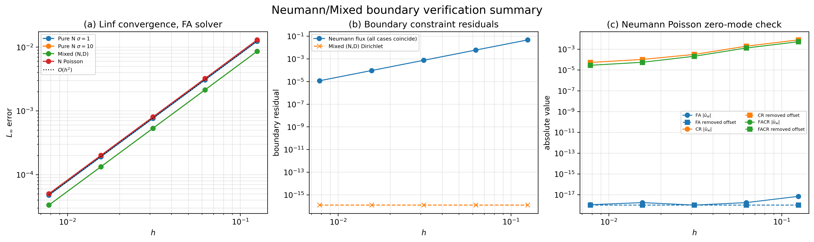
- 看什么：panel (a) 看 FA 在不同边界组合下仍二阶；panel (b) 看 flux 和 Dirichlet residual；panel (c) 看 zero-mode。
- 关键现象：误差收敛、边界残差和 weighted mean 诊断同时闭合。
- 理论对应：ghost-point + DCT-I 对称化给出可对角化求解路径。
- 不要误读：CR/FACR-like 的重合曲线保留在 CSV 中，图中只画 FA 以避免视觉冗余；不声称 FFT9 支持 Neumann/mixed 四阶。
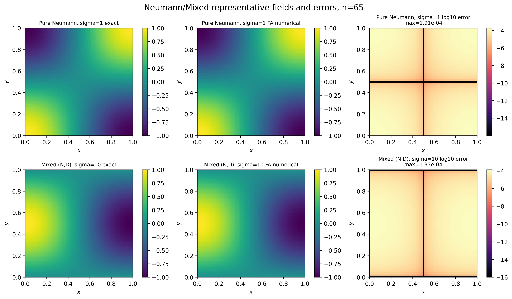
- 看什么：代表性 exact、numerical 和 log-error 空间结构。
- 关键现象：数值场重现了解析场，误差集中和边界行为合理。
- 理论对应：边界条件处理后的五点系统仍能正确求解。
- 不要误读：空间图只用于直观展示，收敛和边界闭合仍由 summary 图与 CSV 支撑。
6. 实验三：精度--成本对比与复杂度实证
为什么这是核心实验
论文标题包含“FFT 快速求解器与迭代法对比研究”。如果没有 error-time 图，就只是分别验证了一些方法，而没有真正做对比。
| 方法 | 离散 | median time | IQR | L∞ 误差 | timing scope |
|---|---|---|---|---|---|
| FA | five_point_second_order | 0.01669 | 0.004456 | 5.572e-07 | solver_call_including_internal_rhs_and_transform_setup |
| CR | five_point_second_order | 0.03765 | 0.009058 | 5.572e-07 | solver_call_including_internal_rhs_and_transform_setup |
| FACR | five_point_second_order | 0.01541 | 0.002445 | 5.572e-07 | solver_call_including_internal_rhs_and_transform_setup |
| FFT9 | fft9_compact_fourth_order_dirichlet | 0.03762 | 0.009816 | 3.441e-11 | solver_call_including_internal_rhs_and_transform_setup |
| GMRES30 | five_point_second_order | 15.72 | 3.409 | 5.572e-07 | gmres_core_solve_only_matrix_and_rhs_setup_excluded |
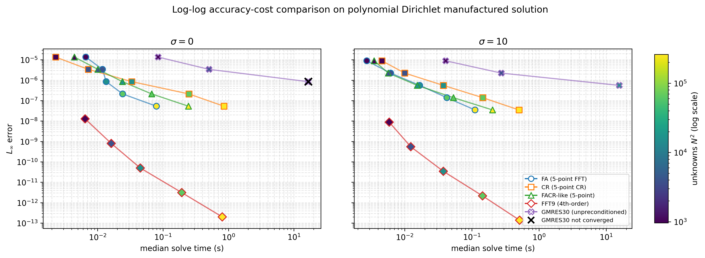
- 看什么：横轴 median solve time，纵轴 L∞ error，二者均为 log scale；越靠左下越好。左 panel 是 sigma=0，右 panel 是 sigma=10。
- 关键现象：FFT9 在相近 FFT 复杂度下给出显著更低误差；五点 direct solvers 误差相近；GMRES30 更靠右且可能未达到容差。
- 理论对应：FFT9 的优势来自 Dirichlet 九点紧致四阶离散；FA/CR/FACR-like 与 GMRES30 都受五点二阶离散误差限制。
- 不要误读：FFT9 不是把同一个五点系统解得更准；timing scope 不是严格 kernel benchmark，GMRES setup 被排除，因此并未刻意偏向 FFT。
坐标轴和视觉编码怎么读？
- 横轴：median solve-call time，越左越快。
- 纵轴：L∞ error，越下越准。
- 形状/边框：算法类别；颜色条：未知量 $N^2$ 的对数规模。
- 连线：同一算法随网格加密的轨迹，通常往右下移动。
两张 panel 分别说明什么？
| panel | 参数 | 含义 |
|---|---|---|
| 左图 | sigma=0 | Poisson 基准问题 |
| 右图 | sigma=10 | 正定 modified Helmholtz 基准问题 |
这不是 true Helmholtz near-resonance 实验；near-resonance 的小分母和 GMRES 停滞由后续实验四、五解释。
| 方法 | 离散/求解口径 | 读图时的定位 |
|---|---|---|
| FA / CR / FACR-like | 五点二阶 direct | 若线性系统解准，PDE 误差主要是 O(h²) 离散误差 |
| FFT9 | Dirichlet 九点紧致四阶 direct | 更低误差来自 O(h⁴) 离散格式，不是同一个五点系统更准 |
| GMRES30 | 五点二阶 unpreconditioned restarted GMRES(30) | 误差同时受五点离散误差和代数残差影响 |
常见追问怎么答
| 问题 | 稳妥回答 |
|---|---|
| 为什么 FFT9 更准？ | 因为它是 Dirichlet 九点紧致四阶离散，误差为 O(h⁴)，而五点方法是 O(h²)。 |
| FFT9 是不是同一五点系统解得更准？ | 不是。FFT9 求解九点紧致离散系统，优势来自更高阶离散格式。 |
| GMRES30 为什么不能达到 FFT9 误差？ | GMRES30 作用于五点离散矩阵，即使代数残差很小，PDE 误差仍受五点二阶离散限制。 |
| 为什么 timing 不是严格 kernel benchmark？ | direct solvers 计时包含内部 RHS/transform setup；GMRES30 计时排除 matrix/RHS setup，因此它是当前实现趋势图。 |
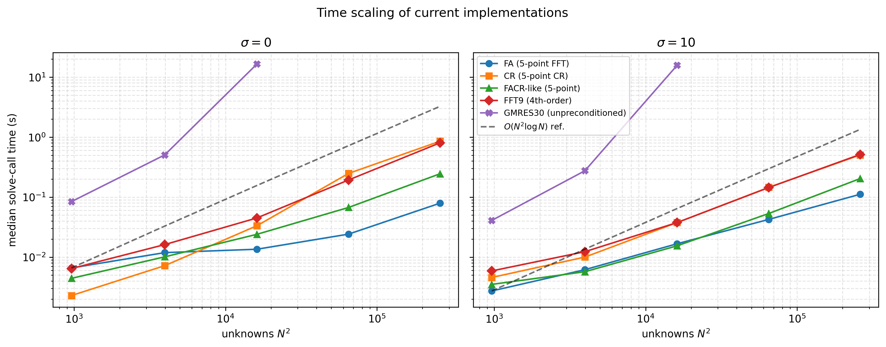
- 看什么：不同方法随未知量规模增长的时间趋势。
- 关键现象：FFT 类直接法呈 O(N² log N) 量级趋势；GMRES30 作为无预处理基准成本增长更敏感。
- 理论对应：规则矩形上 DST/FFT 对角化带来快速直接求解。
- 不要误读：FACR-like 当前实现仍按 O(N² log N) 处理，不声称达到经典 FACR 的 O(N² log log N)。
7. 实验四：Modified/True Helmholtz 的谱结构与 GMRES 行为
核心问题
实验四解释 true Helmholtz 为什么比 modified Helmholtz 更难：根源是频域分母 dp,q=λp,q+σ 的符号和大小。
| case | sigma | min |d| | nearest p | nearest q | # positive | # negative |
|---|---|---|---|---|---|---|
| modified_sigma_plus_100 | 100 | 119.7 | 1 | 1 | 16129 | 0 |
| true_away_from_resonance | -64.14 | 14.8 | 1 | 2 | 16126 | 3 |
| true_near_resonance_23_32 | -128.3 | 0.01 | 2 | 3 | 16121 | 8 |
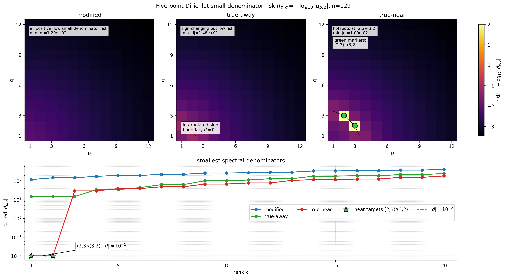
- 看什么：上排看 p,q≤12 的 risk 热点在哪里；下排看前 20 个最小 |d| 的数量级。
- 关键现象：modified 的 min|d|≈1.197e2，true-away 的 min|d|≈1.480e1，true-near 的 (2,3)/(3,2) 降至 1.000e-2。
- 理论对应：R=-log10|d| 越大表示越接近小分母；小分母解释后续模态放大和 GMRES 困难。
- 不要误读：R<0 只表示 |d|>1、风险低；risk map 不是条件数图，sign-changing 也不等于共振。
图 10 到底画什么？
它不是物理空间解场，也不是误差，而是五点 Dirichlet 离散系统的频域分母风险。DST 对角化后，每个模态满足 ûp,q=f̂p,q/dp,q，所以 |d| 越小，该模态越容易被放大。
之所以只画低频窗口，是因为高频模态的 |d| 普遍很大；若画完整 127×127 频域，真正危险的低频小分母会被大范围低风险背景淹没。
三种 case 的读图结论
| case | min |d| | 读法 |
|---|---|---|
| modified | 1.197e2 | 分母全正且远离零，无热点 |
| true-away | 1.480e1 | 已 sign-changing，但不是 near-resonance |
| true-near | 1.000e-2 | (2,3)/(3,2) 是危险小分母 |
下排排序图比颜色更直接：modified 和 true-away 的最低点仍远离 1，true-near 的前两个点突然降到 1e-2。
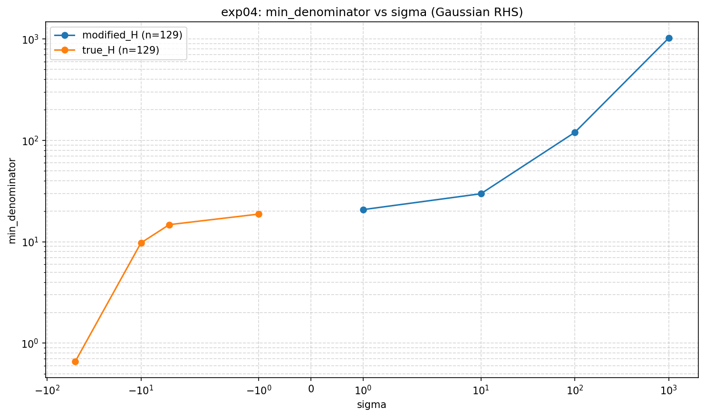
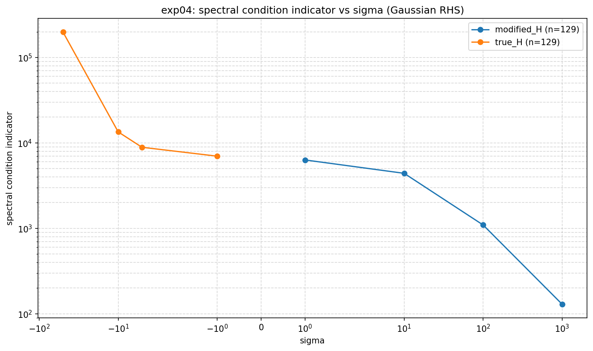
- 看什么：看 min |d| 何时变小，以及 max|d|/min|d| 何时变大。
- 关键现象：true Helmholtz 在接近离散谱时指标迅速增大。
- 理论对应：小分母使谱分母指标变大。
- 不要误读：该指标用于解释 Dirichlet 五点系统的小分母风险，不能无条件外推。
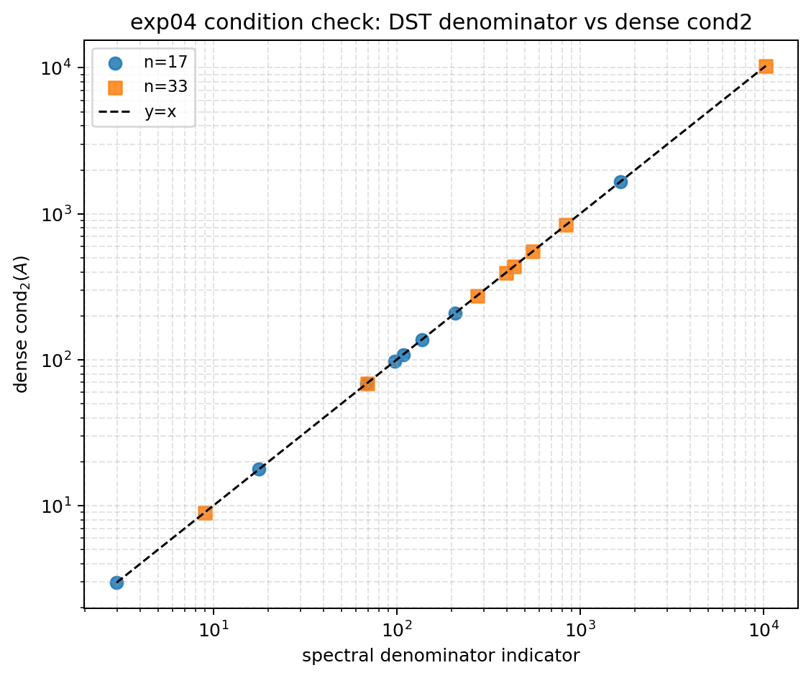
- 看什么：横轴 spectral denominator indicator，纵轴 dense cond₂(A)，点是否贴近 y=x。
- 关键现象：点落在 y=x 附近。
- 理论对应：Dirichlet 五点矩阵由正交 DST-I 对角化，非奇异时 max|d|/min|d| 等于 2-范数条件数。
- 不要误读：这不是新条件数理论，只是当前正交对角化系统的数值校验。
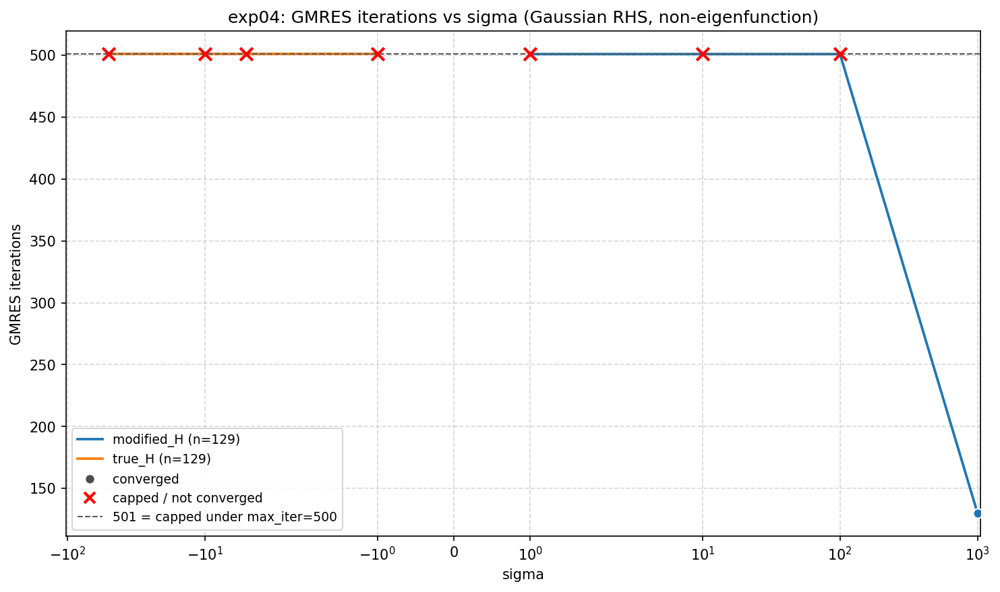
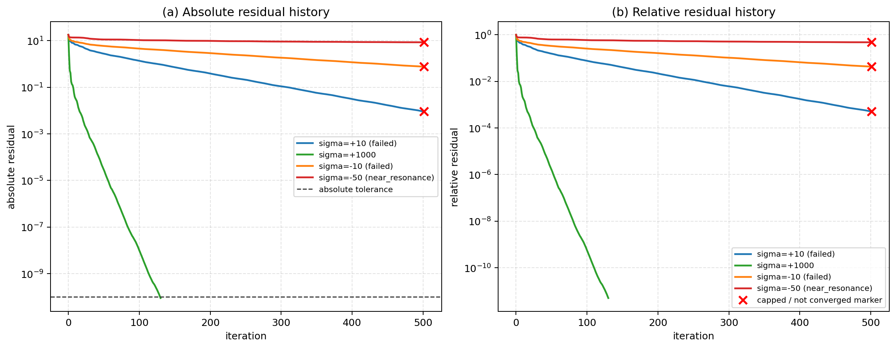
- 看什么：iteration 图看哪些点 capped；history 图看 residual 如何下降或停滞。
- 关键现象：modified 的某些参数残差下降更快，true/near-resonance 出现停滞或 capped。
- 理论对应：谱分母指标增大与无预处理 GMRES30 困难一致。
- 不要误读：501 是 max_iter=500 下 capped-count convention，不是成功收敛 501 步；停止准则是 absolute residual tolerance。
8. 实验五：True Helmholtz near-resonance 模态放大
实验四与实验五的区别
实验四说明“小分母存在，并影响 GMRES”；实验五进一步回答“小分母具体放大哪个模态、是否符合 û=f̂/(λ-κ²)、放大后的解场是否由目标模态主导”。
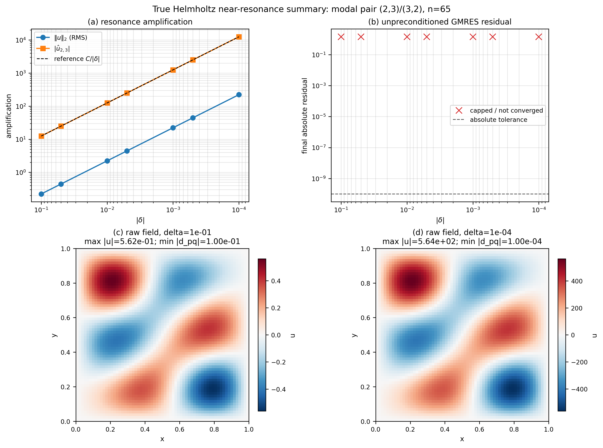
- 看什么：panel (a) 看 1/|delta| 放大；panel (b) 看 final absolute residual 是否低于容差；panel (c)(d) 看同一模态分支下 raw field 的幅值变化。
- 关键现象：delta 从 1e-1 到 1e-4 时，max |u| 约从 5.62e-1 增至 5.64e2，约放大 10^3 倍；GMRES 红叉表示 capped/not converged。
- 理论对应：目标分母 λ_target-(λ_target+delta)=-delta，因此代表模态系数按 1/|delta| 放大。
- 不要误读：下排形状相似不是矛盾：它们属于同一 near-resonance branch，主要差异是幅值；这是离散谱实验，不是连续谱极限。
图 15 四个 panel 怎么读？
| Panel | 看什么 | 回答的问题 |
|---|---|---|
| (a) | ||u||₂(RMS)、|û₂,₃| 与 C/|delta| | 是否符合 1/|delta| 放大 |
| (b) | final absolute residual 与 absolute tolerance | 无预处理 GMRES 是否达到容差 |
| (c) | delta=1e-1 的 raw field | 离共振较远时解场幅值 |
| (d) | delta=1e-4 的 raw field | 接近共振时解场幅值 |
下排 raw fields 的关键量级
| detuning | min |d| | max |u| | 读法 |
|---|---|---|---|
| delta=1e-1 | 1e-1 | 5.62e-1 | 幅值较小 |
| delta=1e-4 | 1e-4 | 5.64e2 | 幅值约放大 10^3 倍 |
两幅 raw fields 使用独立 colorbar，所以颜色强弱不能直接比较；真正要比较的是标题中的 max |u|。
| mode label | target modes | target |û| | 理论相对误差 | shape corr. | GMRES final absres |
|---|---|---|---|---|---|
| mode_11 | (1,1) | 6175 | 2.331e-12 | 1 | 0.6175 |
| mode_23_32 | (2,3);(3,2) | 1831 | 3.320e-11 | 1 | 0.1833 |
| mode_33 | (3,3) | 584.6 | 3.320e-11 | 1 | 0.2716 |
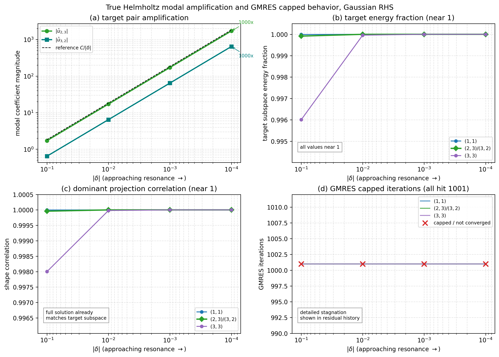
- 看什么：panel (a) 当前专门看简并对 (2,3)/(3,2) 的两个模态系数；panel (b)(c)(d) 比较 (1,1)、(2,3)/(3,2)、(3,3) 三类目标集合。
- 关键现象：两个简并系数都沿 1/|delta| 放大；三组目标的 energy fraction 最小仍约 0.996，shape correlation 最小仍约 0.998；GMRES 全部 capped=1001。
- 理论对应：对目标模态有 û_target=f̂_target/(λ_target-κ²)=f̂_target/(-delta)，因此幅值按 1/|delta| 放大。
- 不要误读：panel (a) 不是三组模态同图比较，而是展开简并对内部两个系数；panel (b)(c) 接近平线不是缺少信号，而是说明 near-resonance 解已经被目标模态主导。
| 目标集合 | 作用 | 读图口径 |
|---|---|---|
| (1,1) | 最低频单模态 | 说明低频单模态也遵循小分母放大机制 |
| (2,3)/(3,2) | 简并双模态 | panel (a) 分别展示两个系数；二者高度可不同，但斜率同为 1/|delta| |
| (3,3) | 较高频单模态 | 说明机制不只出现在最低频或简并模态上 |
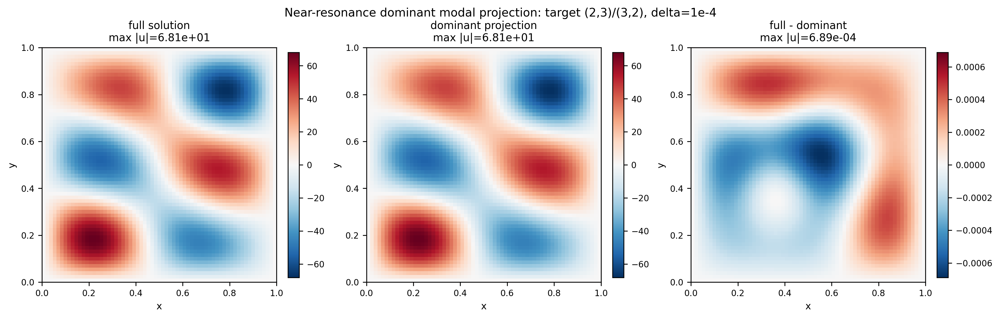
- 看什么：左图是 full solution，中图是只保留 (2,3)/(3,2) 后重构的 dominant projection，右图是 full - dominant。
- 关键现象：full 与 dominant 的最大幅值均约 6.81e1，而差值最大约 6.89e-4，相对量级约 1e-5。
- 理论对应：near-resonance 下目标分母为 -delta，目标简并模态系数远大于其他模态，故物理空间解场由目标子空间主导。
- 不要误读：右图颜色明显不代表误差大；它使用独立色标，必须看标题中的 max |u| 数量级。
dominant projection 怎么算？
- 先对完整解在 interior 网格上做正交 DST-I 展开，得到所有模态系数。
- 只保留目标模态 $(2,3)$ 与 $(3,2)$，其余模态系数置零。
- 反变换回物理空间，得到 udominant。
因此它不是另一个求解器的输出，而是一个诊断量：检查 near-resonance 的完整解能否被目标模态子空间解释。
这张图最关键的量级
| 对象 | 最大幅值 | 含义 |
|---|---|---|
| full solution | $6.81\times10^1$ | 完整离散谱解 |
| dominant projection | $6.81\times10^1$ | 仅保留 $(2,3)/(3,2)$ 后重构 |
| full - dominant | $6.89\times10^{-4}$ | 未被目标子空间解释的剩余部分 |
差值与主幅值之比约为 10-5，说明目标模态子空间解释了几乎全部空间结构。
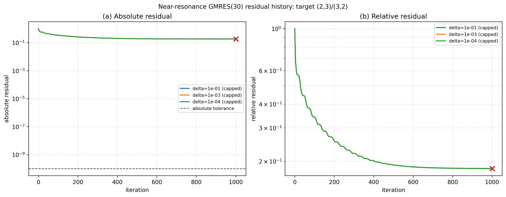
- 看什么：横轴是 GMRES iteration，纵轴是 log scale residual；左图 absolute residual 对应实际停止准则，右图 relative residual 仅用于归一化比较。
- 关键现象：三条 near-resonance 曲线不是完全不动，而是先有限下降，随后进入平台；最终 residual 约 1.83e-1，仍远高于 1e-10 绝对残差容差。
- 理论对应：small denominator → modal amplification → near-singular/ill-conditioned discrete system → unpreconditioned GMRES(30) stagnation。
- 不要误读：capped=1001 是 max_iter=1000 下的 capped-count convention，不是成功收敛到第 1001 步；这也不代表所有 Helmholtz 求解器都不行。
9. 最容易被问的问题
| 问题 | 稳健回答 |
|---|---|
| 为什么 exp00 不算核心实验？ | 它只验证同一离散系统的不同求解路径一致，不回答连续 PDE 精度。 |
| 为什么 FFT9 比五点更准？ | FFT9 是 Dirichlet 九点紧致四阶格式；五点格式是二阶。 |
| FFT9 能用于 Neumann/mixed 吗？ | 本文只实现并验证 Dirichlet FFT9；Neumann/mixed 四阶紧致边界模板是后续工作。 |
| GMRES 为什么慢？ | 在 true Helmholtz near-resonance 下，小分母使系统病态，当前无预处理 GMRES30 残差下降困难。 |
| risk map 是条件数图吗？ | 不是。risk map 是 small-denominator risk visualization；condition check 是另一张图。 |
| near-resonance 证明了什么？ | 证明当前离散谱系统中目标模态按 1/|delta| 放大；不代表连续谱极限。 |
| 为什么图 16 的 panel (b)(c) 是平的？ | 因为 target subspace energy fraction 和 shape correlation 已接近 1，说明解已被目标模态主导；这不是缺少信号。 |
| GMRES 计时口径是否偏向 FFT？ | GMRES 的 matrix/RHS setup 被排除，计时条件更宽容；在这种口径下 FFT 仍占优，反而加强结论。 |
10. 绝对不能乱说的话
| 不要说 | 应该说 |
|---|---|
| GMRES 不适合 Helmholtz | 当前无预处理 GMRES30 在 true Helmholtz near-resonance 下容易停滞；预处理方法不在本文实验范围。 |
| FFT9 支持 Neumann/mixed 四阶 | 本文 FFT9 只实现并验证 Dirichlet；Neumann/mixed 四阶紧致格式是后续方向。 |
| FACR-like 达到 O(N² log log N) | 经典 FACR 理论可达 O(N² log log N)，本文 FACR-like 当前实现仍按 O(N² log N) 处理。 |
| risk map 是条件数图 | risk map 只可视化 R=-log10|d| 的小分母风险；condition check 另行验证 Dirichlet 五点下的 cond₂ 等价。 |
| near-resonance 证明连续谱结论 | near-resonance 实验基于有限维 Dirichlet 五点离散谱。 |
| error-time 是严格公平 kernel benchmark | 该图展示当前实现下的整体基准趋势；GMRES setup 被排除，比较没有刻意偏向 FFT。 |
| 图 16(b)(c) 展示随 delta 的显著趋势 | 它们主要证明支配性：energy fraction 和 shape correlation 已接近 1，说明解由目标模态主导。 |
| exp04 和 exp05 的 capped 计数一样 | exp04 中 max_iter=500，capped 记为 501；exp05 中 max_iter=1000，capped 记为 1001。 |
11. 三天复习路线
| 时间 | 目标 | 要掌握的句子 |
|---|---|---|
| 第一天 | 只理解主线 | d=lambda+sigma；modified 分母全正，true 可能接近 0；小分母导致模态放大和 GMRES 停滞。 |
| 第二天 | 逐张读核心图 | 图 1 看斜率，图 6 看三类诊断，error-time 看左下角，图 10 看热点和排序，图 16 看 1/|delta|。 |
| 第三天 | 练答辩话术 | 每个实验都用“问题--方法--图--结论--限制”五步讲，不越界。 |